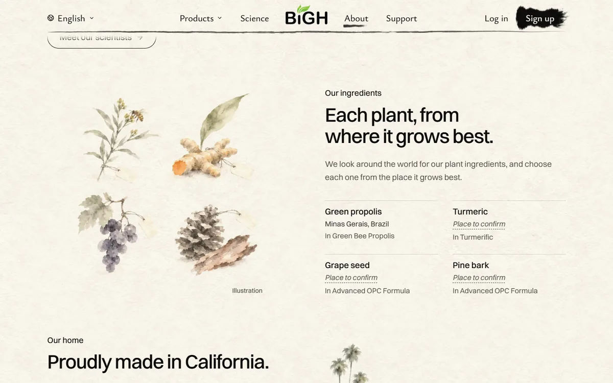
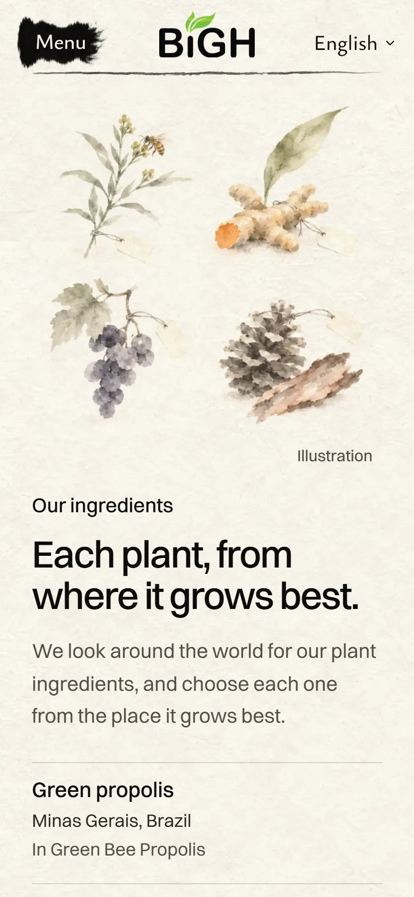
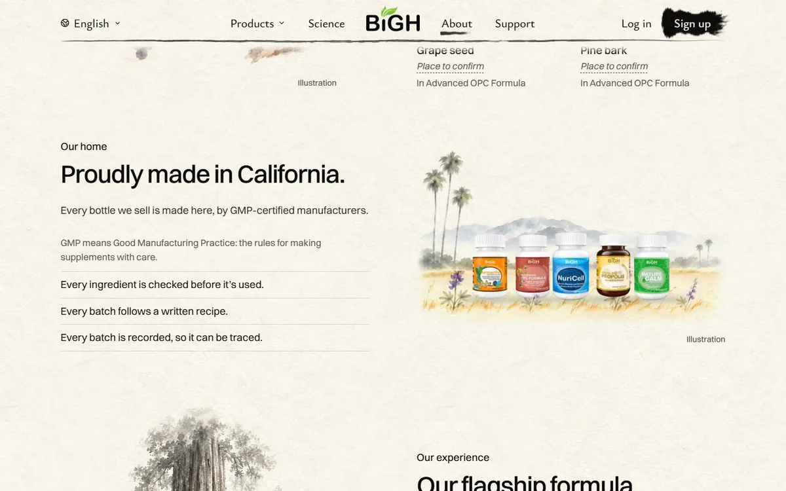
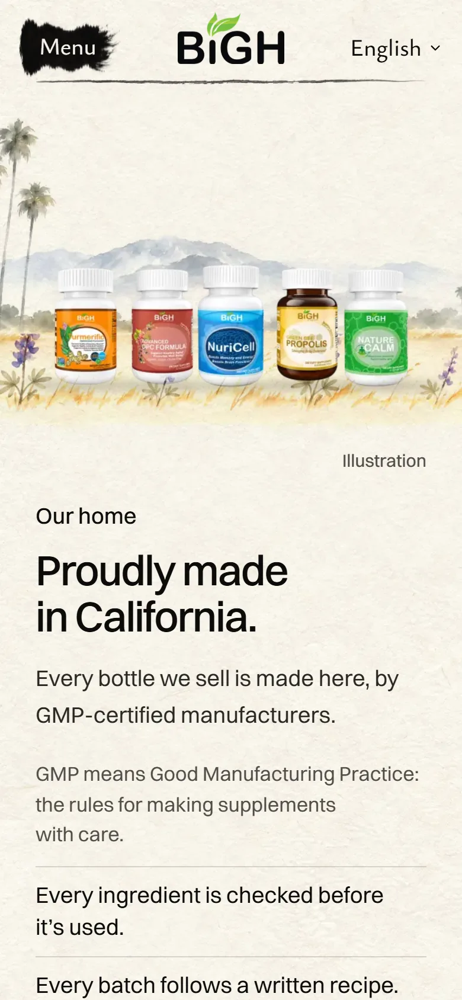
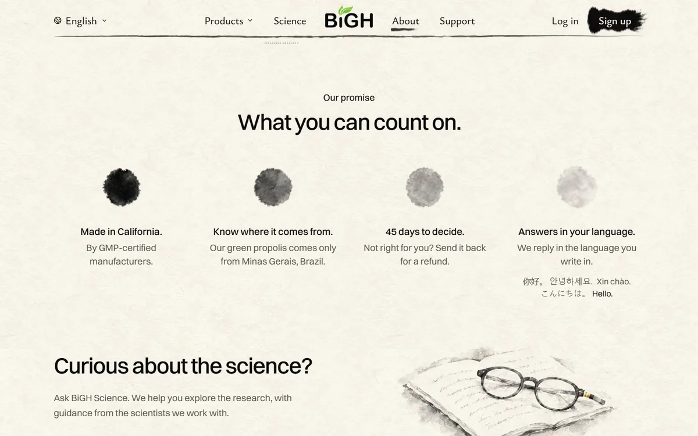
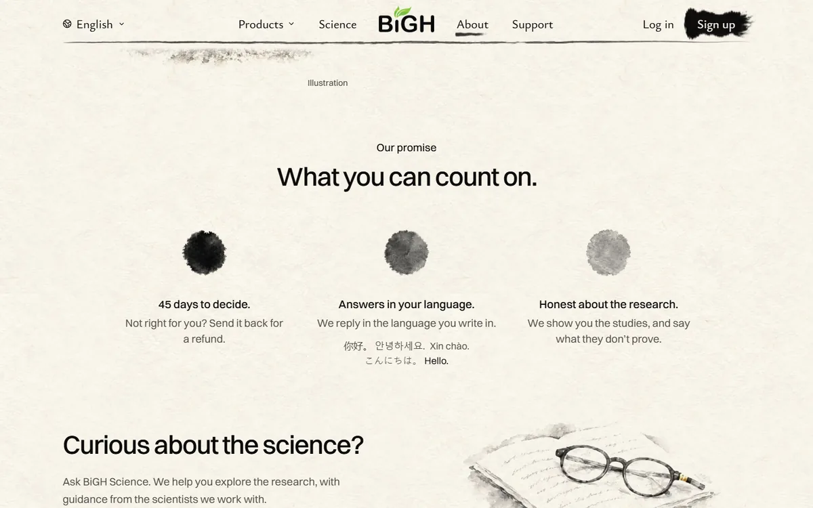

<title>About Page Additions</title>
<meta name="claude:viewport-fit-sides" content="cover">
<link rel="preconnect" href="https://fonts.googleapis.com">
<link rel="preconnect" href="https://fonts.gstatic.com" crossorigin>
<link rel="stylesheet" href="https://fonts.googleapis.com/css2?family=Ysabeau+Office:wght@400;500;600&display=swap">
<style>
  /* Layout: one column like a scroll. Each new part of the About page is a card with the real
     built page (big screen beside phone), its score and what still holds it back. The site's own
     paper and ink. */
  :root {
    --paper: #f4f0e6;
    --card: #faf7f0;
    --ink: #171512;
    --ink-soft: #5d574d;
    --rule: #d9d2c1;
    --new: #1f3d2b;
    --new-bg: #e3ebdf;
    --ask: #6b4a12;
    --ask-bg: #f3e6c8;
    --title: "Ysabeau Office", "Iowan Old Style", Georgia, serif;
    --body: system-ui, -apple-system, "Segoe UI", Roboto, sans-serif;
  }
  @media (prefers-color-scheme: dark) {
    :root:not([data-theme="light"]) {
      --paper: #1b1915;
      --card: #24211c;
      --ink: #f1ece0;
      --ink-soft: #b6ae9e;
      --rule: #3a362e;
      --new: #cfe3c6;
      --new-bg: #2b3a2c;
      --ask: #f0d39a;
      --ask-bg: #3d3220;
      color-scheme: dark;
    }
  }
  :root[data-theme="dark"] {
    --paper: #1b1915;
    --card: #24211c;
    --ink: #f1ece0;
    --ink-soft: #b6ae9e;
    --rule: #3a362e;
    --new: #cfe3c6;
    --new-bg: #2b3a2c;
    --ask: #f0d39a;
    --ask-bg: #3d3220;
    color-scheme: dark;
  }
  body {
    background: var(--paper);
    color: var(--ink);
    font: 17px/1.5 var(--body);
  }
  .wrap {
    max-width: 980px;
    margin: 0 auto;
    padding-left: max(16px, env(safe-area-inset-left, 0px));
    padding-right: max(16px, env(safe-area-inset-right, 0px));
    padding-block: 32px 72px;
    display: grid;
    gap: 28px;
  }
  header {
    display: grid;
    gap: 10px;
  }
  h1 {
    font: 600 38px/1.08 var(--title);
    margin: 0;
    text-wrap: balance;
  }
  .lede {
    margin: 0;
    max-width: 38em;
    color: var(--ink-soft);
  }
  .order {
    margin: 0;
    padding: 0;
    list-style: none;
    display: flex;
    flex-wrap: wrap;
    gap: 6px;
  }
  .order li {
    font-size: 14px;
    padding: 5px 10px;
    border-radius: 99px;
    border: 1px solid var(--rule);
    color: var(--ink-soft);
  }
  .order li.is-new {
    border-color: transparent;
    background: var(--new-bg);
    color: var(--new);
    font-weight: 600;
  }
  .card {
    background: var(--card);
    border: 1px solid var(--rule);
    border-radius: 14px;
    padding: 18px;
    display: grid;
    gap: 14px;
  }
  .card h2 {
    font: 600 26px/1.2 var(--title);
    margin: 0;
    display: flex;
    flex-wrap: wrap;
    align-items: baseline;
    gap: 6px 12px;
    text-wrap: balance;
  }
  .badge {
    font: 600 13px/1 var(--body);
    color: var(--new);
    background: var(--new-bg);
    padding: 5px 9px;
    border-radius: 99px;
  }
  .card ul.notes {
    margin: 0;
    padding-left: 1.2em;
    display: grid;
    gap: 4px;
    max-width: 44em;
  }
  .score {
    margin: 0;
    color: var(--ink-soft);
    font-size: 15px;
    max-width: 44em;
  }
  .shots {
    display: grid;
    grid-template-columns: 3fr 1fr;
    gap: 12px;
    align-items: start;
  }
  .shots.pair {
    grid-template-columns: 1fr 1fr;
  }
  figure {
    margin: 0;
    display: grid;
    gap: 6px;
    min-width: 0;
  }
  figure img {
    display: block;
    width: 100%;
    height: auto;
    max-width: 100%;
    border-radius: 8px;
    border: 1px solid var(--rule);
    background: #f3efe4;
  }
  figcaption {
    font-size: 14px;
    color: var(--ink-soft);
  }
  .ask {
    background: var(--ask-bg);
    border-radius: 14px;
    padding: 18px;
    display: grid;
    gap: 10px;
  }
  .ask h2 {
    font: 600 24px/1.2 var(--title);
    margin: 0;
    color: var(--ask);
  }
  .ask ol {
    margin: 0;
    padding-left: 1.4em;
    display: grid;
    gap: 8px;
    max-width: 44em;
  }
  footer {
    font-size: 14px;
    color: var(--ink-soft);
    max-width: 44em;
  }
  @media (max-width: 640px) {
    h1 {
      font-size: 32px;
    }
    .shots,
    .shots.pair {
      grid-template-columns: 1fr;
    }
    .shots > figure.phone {
      max-width: 300px;
    }
  }
</style>

<main class="wrap">
  <header>
    <h1>About page: two new chapters</h1>
    <p class="lede">
      Your ideas, built into the real About page on my computer. Nothing is live. Pictures are
      from the built site.
    </p>
    <ul class="order" aria-label="The page's order now">
      <li>Opening</li>
      <li>Our purpose</li>
      <li>Our scientists</li>
      <li class="is-new">Our ingredients</li>
      <li class="is-new">Made in California</li>
      <li>Our experience</li>
      <li>Our promise</li>
      <li>Ask</li>
    </ul>
  </header>

  <section class="card" aria-labelledby="c1">
    <h2 id="c1">1. Each plant, from where it grows best <span class="badge">New</span></h2>
    <ul class="notes">
      <li>A botanist's four plant samples, painted: propolis with a bee, turmeric, grapes, pine.</li>
      <li>Beside it, a key: each plant, where it comes from, and which product it's in.</li>
      <li>Only Brazil is on file. The other three say "Place to confirm" until you tell me.</li>
      <li>It speaks of plants only. NuriCell's four nutrients are made, not grown.</li>
    </ul>
    <div class="shots">
      <figure>
        
        <figcaption>Laptop, 1440 px</figcaption>
      </figure>
      <figure class="phone">
        
        <figcaption>Phone</figcaption>
      </figure>
    </div>
    <p class="score">
      My score: 8/10. Holding it back: the painting is softer and more "greeting card" than the
      site's other ink paintings, and its little paper tags are faint.
    </p>
  </section>

  <section class="card" aria-labelledby="c2">
    <h2 id="c2">2. Proudly made in California <span class="badge">New</span></h2>
    <ul class="notes">
      <li>The five real bottles standing on a painted California morning: palms, mountains, lupines.</li>
      <li>"Every bottle we sell is made here, by GMP-certified manufacturers."</li>
      <li>GMP in plain words: ingredients checked, a written recipe, every batch recorded.</li>
      <li>On phones the picture runs edge to edge, so the bottles stay big enough.</li>
    </ul>
    <div class="shots">
      <figure>
        
        <figcaption>Laptop, 1440 px</figcaption>
      </figure>
      <figure class="phone">
        
        <figcaption>Phone</figcaption>
      </figure>
    </div>
    <p class="score">
      My score: 8/10. Holding it back: the bottles' bright labels look a little pasted onto the
      soft painting, and the three GMP lines are plain.
    </p>
  </section>

  <section class="card" aria-labelledby="c3">
    <h2 id="c3">3. Our promise: three, not four <span class="badge">Changed</span></h2>
    <ul class="notes">
      <li>"Made in California" and the propolis line moved up into their own chapters.</li>
      <li>New third promise: "Honest about the research. We show you the studies, and say what they don't prove."</li>
    </ul>
    <div class="shots pair">
      <figure>
        
        <figcaption>Before: four</figcaption>
      </figure>
      <figure>
        
        <figcaption>After: three</figcaption>
      </figure>
    </div>
    <p class="score">My score: 8/10. It is calmer, but the grey dots are still the plainest thing on the page.</p>
  </section>

  <section class="ask" aria-labelledby="ask">
    <h2 id="ask">What I need from you</h2>
    <ol>
      <li>Where does our <strong>turmeric</strong> come from? One supplier listing says India. I haven't confirmed it.</li>
      <li>Where does our <strong>grape seed</strong> come from?</li>
      <li>Where does our <strong>pine bark</strong> come from?</li>
      <li>Is "<strong>GMP-certified</strong>" still the right wording? "cGMP" is the FDA's rule for every US maker. "Certified" means an outside auditor checked them.</li>
      <li>Your critique of 1, 2 and 3.</li>
    </ol>
  </section>

  <footer>
    New words are in English only for now. Translations come after you approve them.
  </footer>
</main>
